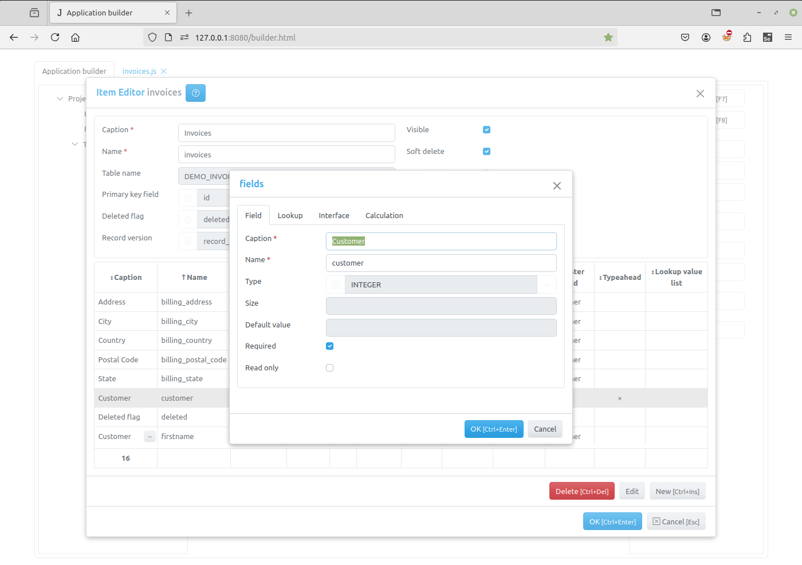
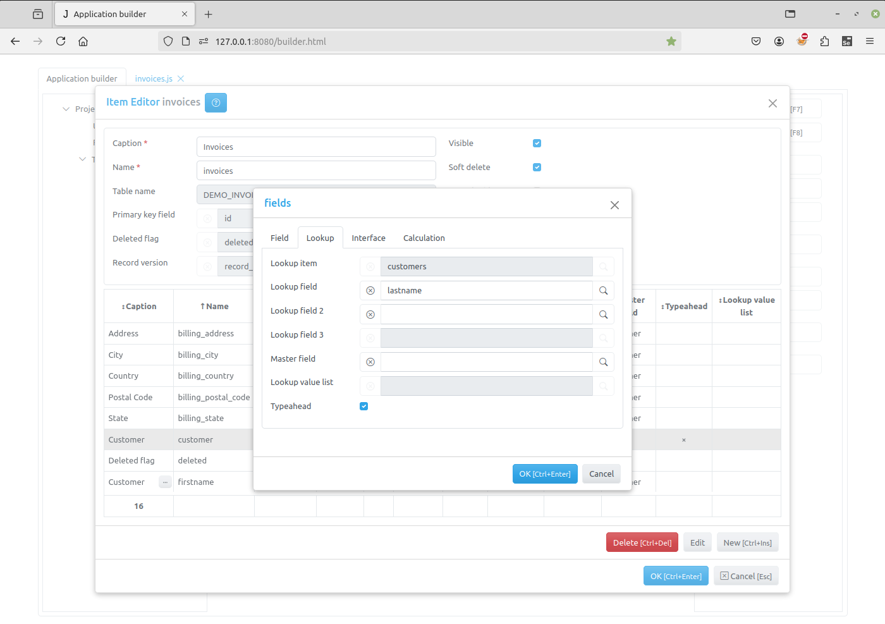
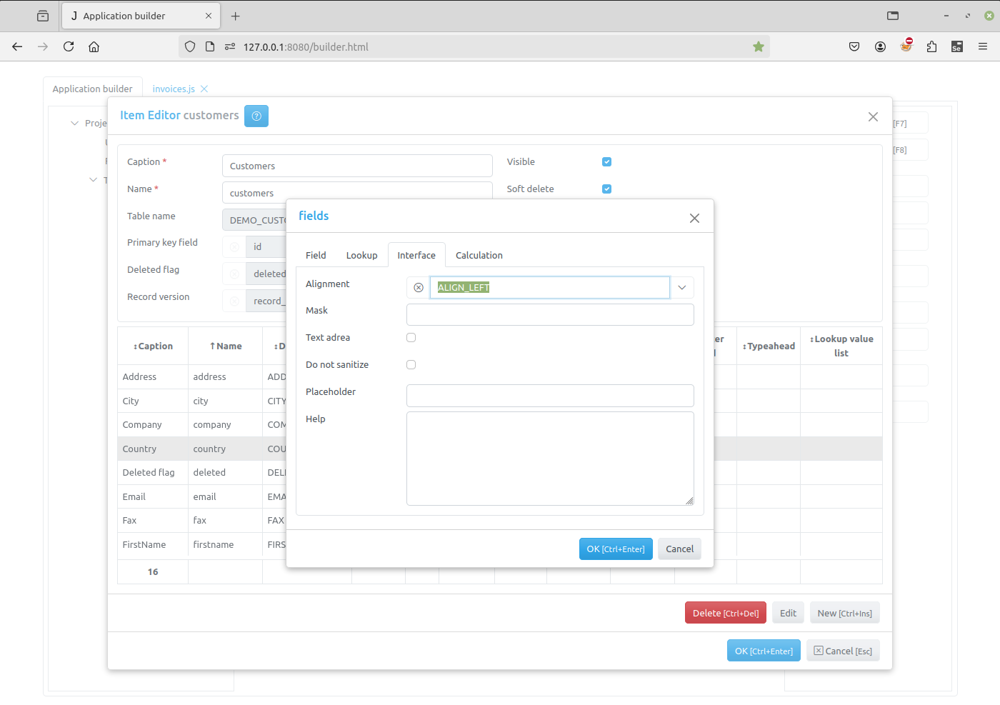
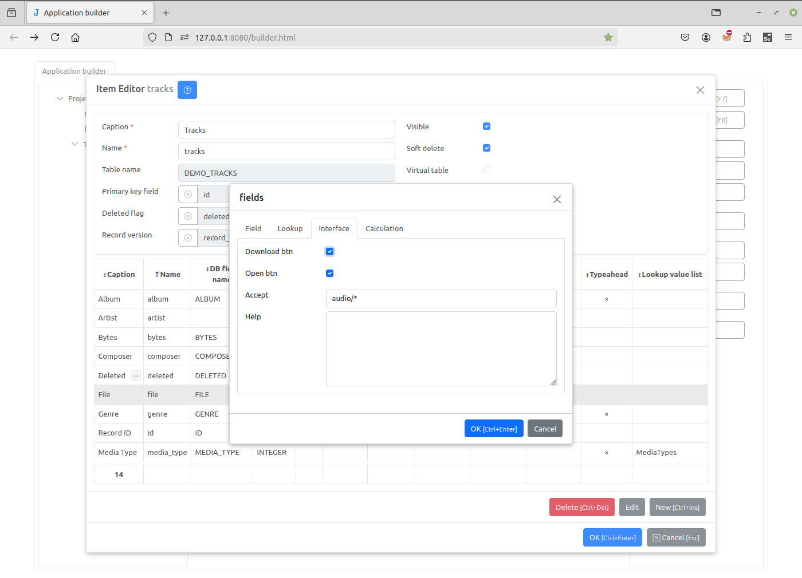
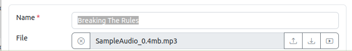
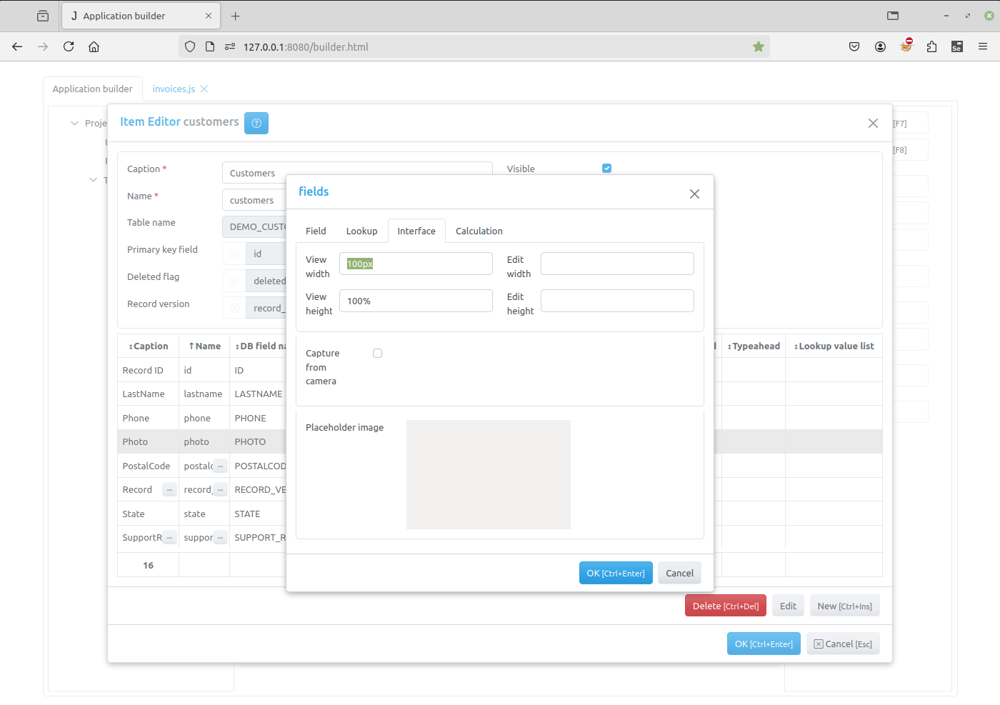
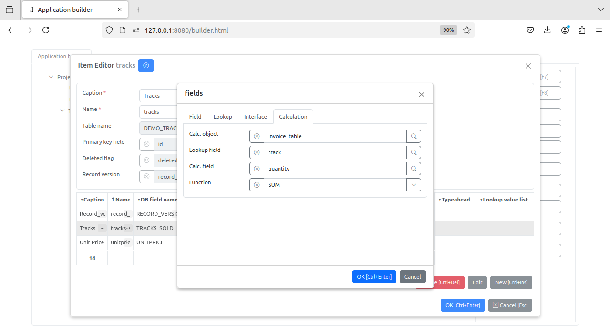

Field Editor Dialog¶
Use the Field Editor Dialog to create a new or modify an existing field.
Note
For some operations, the DB manual mode must be set to true. For example, changing the field type. Since the database is in “Manual Mode”, changing the type will not reflect within the database structure. Use this with caution.
The dialog has following tabs: Field, Lookup, Interface and Calculation.
Field tab¶
The Field tab have the following fields:
Caption - the field name that appears to users.
Name - the name of the field that will be used in programming code to get access to the field object. It should be a valid python identifier.
Type - type of the field — one of the following values:
TEXT
INTEGER
FLOAT
CURRENCY
DATE
DATETIME
BOOLEAN
LONGTEXT
FILE
IMAGE
Size - the size of the field for text fields.
Default value - the default value of the field, for boolean fields use 0 or 1
Required - if this checkbox is checked, the post method will raise an exception if this field is empty. See Modifying datasets.
Read only - this checkbox is checked, the field value can not be changed in the interface controls created by the create_inputs method on the client.
Lookup tab¶
Lookup item - the lookup item for Lookup fields
Lookup field - the lookup field for Lookup fields
Lookup field 2 - the lookup field 2 for Lookup fields
Lookup field 3 - the lookup field 3 for Lookup fields
Master field - the master field for Lookup fields
Typeahead - if this checkbox is checked, typeahead is enabled for the lookup field
Lookup value list - use it to specify a lookup list for an integer field
Interface tab¶
Mask - use this attribute to specify the field_mask
TextArea - for text fields if this attribute is set the textarea element will be created for these fields in the Edit Form Dialog
Do not sanitize - set this attribute to prevent default sanitizing of the field value, see Sanitizing
Alignment - determines the alignment of text in the controls that display this field.
Placeholder - use this attribute to specify the placeholder that will be displayed by the field input.
Help - if any text / html-message is specified, a question mark will be displayed to the right of the input, so when the user moves the mouse pointer over this mark, a pop-up window appears displaying this message.
Interface tab for FILE field¶
 Download btn - uncheck the box to hide the download button (middle)
Open btn - uncheck the box to hide the open button (right)
Accept - the attribute specifies the types of files that can be loaded. This is an Accept string.
Note
Please note that Accept attribute is required. Uploaded files are checked on the server against this attribute.
Interface tab for Image field¶
View width - specifies the width of an image in pixels when it is displayed in the table of the view form. If it not specified, the width is auto
View height - specifies the height of an image in pixels when it is displayed in the table of the view form. If it not specified, the height is auto
Edit width - specifies the width of an image in pixels when it is displayed in the edit form. If it not specified, the width is auto
Edit height - specifies the height of an image in pixels when it is displayed in the edit form. If it not specified, the height is auto
Capture from camera - if this checkbox is set, the user will be able to capture image from camera.
Placeholder image - double-click the image to set the placeholder image, that will be displayed when field image is not set. Hold Ctrl key and double-click the image to clear the placeholder image.
Calculation tab¶
Calc. object - specifies the Details table.
Lookup field - specifies the Lookup field. For example, the Details table invoice_table, tracks field, which is a lookup field to Name field on table Tracks.
Calc. field - specifies on which field the calculation is performing on.
Function - specifies the server side functions (SUM, COUNT, MIN, MAX, AVG).